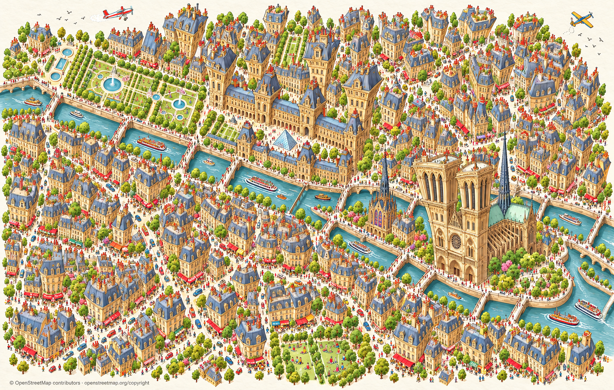
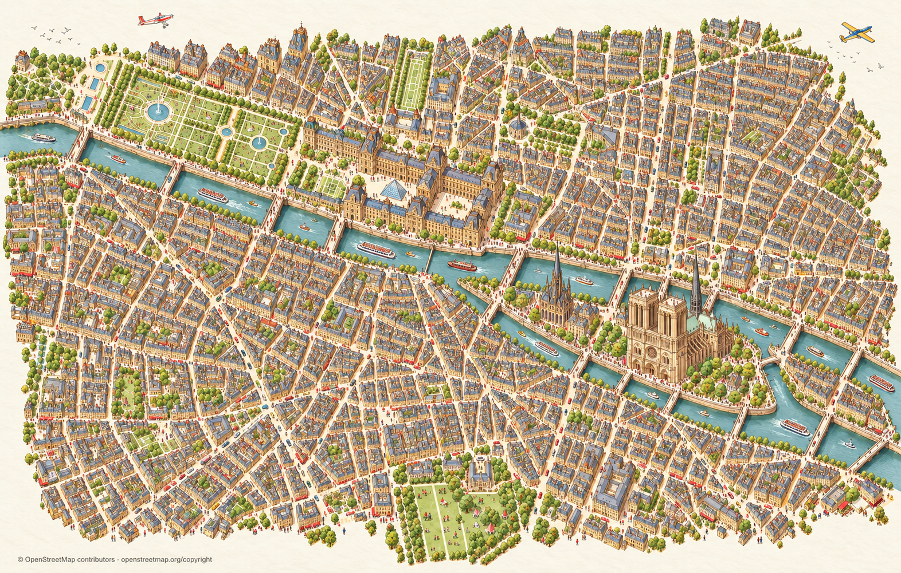
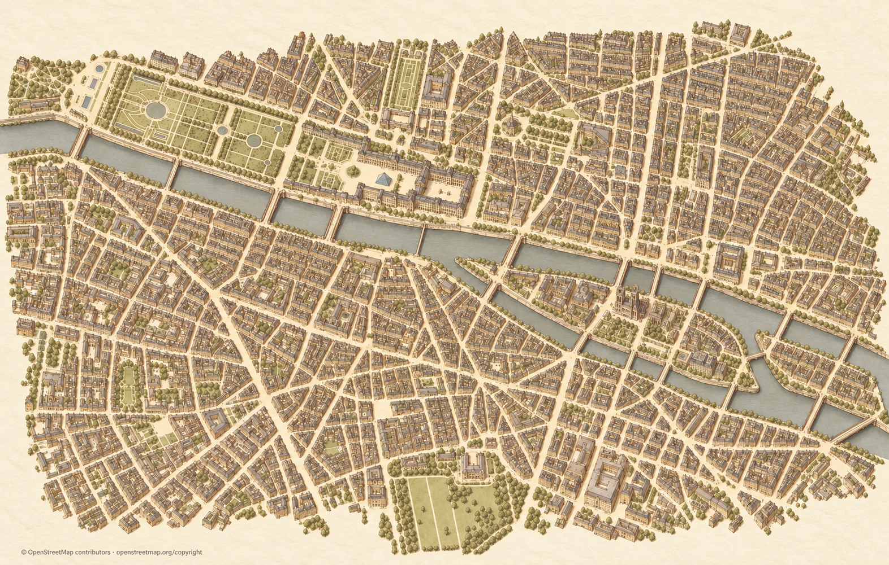

Pariisi · Neljä karttaversiota
Uusin D kokeilee voimakasta karikatyyriä. C on hillitympi ja raikas vaihtoehto. A ja B näyttävät aiemmat lämpimät versiot.
D · Voimakas karikatyyri — uusin kokeilu

Avaa alkuperäinen kuva napsauttamalla.C · Raikas ja elävä

Avaa alkuperäinen kuva napsauttamalla.A · Lämmin ja maltillinen

Avaa alkuperäinen kuva napsauttamalla.B · Lämpimät, korostetut nähtävyydet
Avaa alkuperäinen kuva napsauttamalla.Vertailukuvia tyylin valintaan. Kartan tarkat paikat ja palojen saumat varmennetaan valinnan jälkeen.
© OpenStreetMap contributors · Karttatietojen lisenssi